21 Over 90 years running 90 km
“Success supposes endeavour.”
Background The Comrades Marathon in South Africa between Durban and Pietermaritzburg has been run over 90 times since 1921.
Questions How many people take part? Who takes part and how has that changed over the years? How long do the best runners take and how long do most runners take? Are men much faster than women? Is there a difference in times between the “down” runs starting in Pietermaritzburg and the “up” runs starting in Durban?
Sources Data from Stratton (2019), race profile information from 28East (2022).
Structure Information on 445129 participants’ runs in 12 variables.
21.1 How many run in the Comrades (Ultra)Marathon?
The data were scraped from the Marathon’s website (Comrades Marathon Association (2022)) and made available on Kaggle. More detailed data, including runners’ ages and split times for the 2019 race, have been analysed elsewhere (Collier (2019)).
The race was run for the first time in 1921 from Durban to Pietermaritzburg (“down”), with 16 runners finishing. In 1922 the race was run in the other direction (“up”). Mostly the directions alternated in successive years, but on three occasions they did not.
Figure 21.1 shows the the numbers of finishers and the directions in each year. The race distance was not always the same and usually a little under 90 km.
Code
data(cmAll)
cmAllD <- cmAll %>% group_by(Direction, Year) %>% summarise(N=n()) %>% ungroup()
cmAllD <- cmAllD %>% mutate(wt=ifelse(Direction=="Up", 1, -1))
d1 <- ggplot(cmAllD, aes(Year, weight=wt)) + geom_bar(aes(fill=Direction)) + xlab(NULL) + ylab(NULL) + theme(legend.position="none", axis.text.y=element_blank(), axis.ticks.y=element_blank()) + ylim(-2, 2) + scale_fill_manual(values=c("black", "#E69F00")) + scale_x_continuous(breaks=seq(1920, 2020, 10))
cmAllfastn <- cmAll %>% group_by(Year) %>% summarise(N=n())
cmAllfastn <- cmAllfastn %>% complete(Year=full_seq(Year,1))
d2 <- ggplot(cmAllfastn, aes(Year, N)) + geom_line(colour="deeppink3", lwd=1.5) + ylab(NULL) + xlab(NULL) + scale_x_continuous(breaks=seq(1920, 2020, 10))
d2/d1 + plot_layout(heights=c(3,1))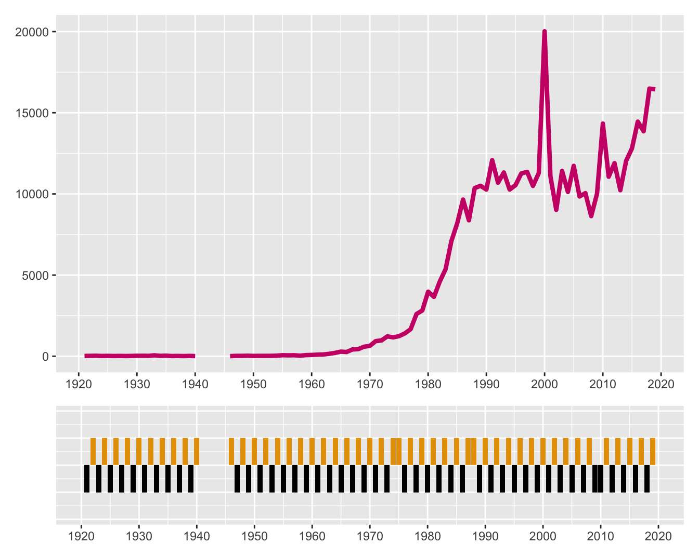
Figure 21.1: Numbers of finishers of the Comrades Marathon and the race direction by year (dark orange is up, black is down).
Numbers remained low until the 1960s and rose sharply in the 1970s and 1980s (Figure 21.1). No races took place from 1941 to 1945 during the Second World War. There was a sharp peak in the year 2000 when just over 20,000 finished, almost twice as many as in the surrounding years. There were two reasons. First, it was the 75th running of the race and there was much publicity, so many more entered. Second, the limit on finishing time was extended from 11 hours to 12 hours for that year. In 2019 there were 25,000 entrants (not all started) and over 16,000 finished. Detailed information can be found on the website for the race (Comrades Marathon Association (2022)) and some summary information on its Wikipedia page (Wikipedia (2022)).
21.2 Numbers by age and sex
The race was originally only open to white males. In 1975 both women and blacks were allowed to enter officially for the first time, although a woman, Frances Hayward, ran in the third race in 1923 and the first black man, Robert Mtshali, ran in 1935.
Runners have to be at least 20 to participate and are divided into separate groups by age: SENIOR (20-39), VETERANS (40-49), MASTERS (50-59), GRANDMASTERS (60+). Figure 21.2 is a plot of the numbers in each group for each sex. The four female groups are drawn with dashed lines and the four male groups with solid lines. There is an additional unlabelled brown solid line for entrants having no known birth year.
Code
cmAll <- cmAll %>% separate(Category, c("Sex", "Cat"), sep=" ", remove=FALSE)
cmAll <- cmAll %>% mutate(cat=factor(Cat, levels=c("SEN", "VET", "MAS", "GM")))
cmAllcat <- cmAll %>% group_by(Year, Category, Sex, cat) %>% summarise(nn=n())
cmAllcat75 <- cmAllcat %>% ungroup() %>% filter(Year>1974)
comX <- ggplot(cmAllcat75, aes(Year, nn, group=Category)) + geom_line(aes(colour=cat, lty=Sex)) + scale_linetype_manual(values=c("longdash", "solid")) + ylab(NULL) + xlab(NULL) + theme(legend.position="none") + geom_text_repel(data=cmAllcat %>% filter(Year==2019), aes(label=Category, x=Year + 0.5, y=nn, colour=cat), nudge_x=0.5) + xlim(1975, 2021) + scale_colour_colorblind() + geom_line(data=cmAllcat75 %>% filter(is.na(Category)), aes(Year, nn), colour="brown", lty="solid")
comX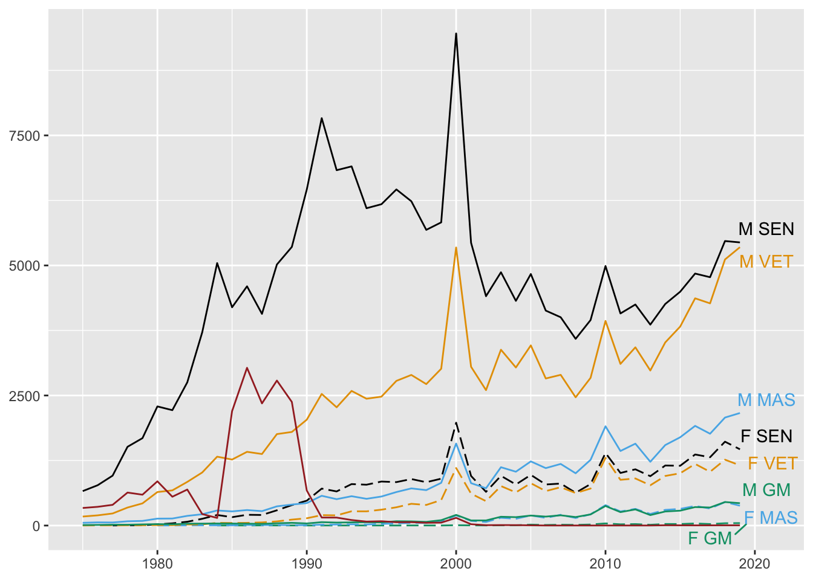
Figure 21.2: Numbers of finishers by age group and sex from 1975 to 2019 (the brown line is for those whose birthyear is not given)
The male seniors group dominated the race until 2000, apart from a few years in the 1980s when entrants with no birth years recorded could not be assigned to any age category. In recent years the number of male veterans has become larger and almost the same as the number of seniors. The other smaller groups follow a common pattern of a general increase with peaks in 2000 and 2010.
The first foreign entrants were a group of four top runners from England in 1962 (Wikipedia (2022)). All four finished in the top five with one of them, John Smith, winning the race. Figure 21.3 shows how the numbers of female and foreign finishers have developed since 1975.
Code
cmAllfastw <- cmAll %>% filter(Year > 1974, Sex=="F") %>% group_by(Year) %>% summarise(N=n())
cmAllfastf <- cmAll %>% filter(Year > 1974, !Nation=="RSA") %>% group_by(Year) %>% summarise(Nf=n())
ggplot(cmAllfastw, aes(Year, N)) + geom_line(colour="purple2", lwd=1.5) + ylab(NULL) + xlab(NULL) + geom_line(data=cmAllfastf, aes(Year, Nf), colour="indianred1", lwd=1.5)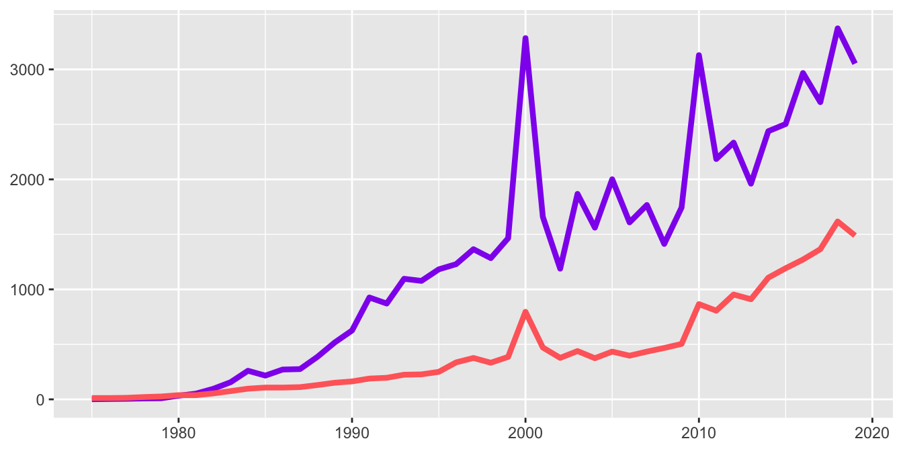
Figure 21.3: Numbers of female (purple) and foreign (red) finishers since 1975
Both groups have grown in numbers over the years with the numbers of foreign finishers increasing more slowly and with less variability. The number of female finishers peaked sharply in 2000 and in 2010. A new highest number for female finishers was established in 2018.
21.3 How long do runners take to finish?
The race was limited to 12 hours in the first few years until 1927. From 1928 to 2002 the limit was 11 hours, apart from the 75th race in 2000 when it was extended to 12 hours. Since 2003 the limit has been 12 hours again. In recent years qualifying as a finisher required runners to additionally reach up to six cut-off points along the way within specified times.
Detailed time comparisons across years are difficult because of the different numbers running, the different weather conditions, the different directions of the run (“down” and “up”), and the different distances run. Comrades Marathon Association (2022) gives the distances of the four Comrades Marathons from 2016 to 2019 as 89.2 km, 86.7 km, 90.2 km, and 86.8 km.
Boxplots of the times in hours for each year are displayed in Figure 21.4. The few times of over 12 hours listed in the dataset have been removed.
Code
cmAll <- cmAll %>% mutate(timeSecs=3600*hour(Time) + 60*minute(Time) + second(Time))
cmAllx <- cmAll %>% filter(timeSecs <= 12*3600)
ggplot(cmAllx, aes(Year, timeSecs, group=Year)) + geom_boxplot() + ylab("hours") + xlab(NULL) + scale_y_continuous(breaks=seq(5*3600, 11*3600, 7200), labels=c("5", "7", "9", "11"), limits=c(5*3600, 12*3600)) + geom_hline(yintercept=c(11*3600, 12*3600), linetype="dashed", colour="red") + theme(axis.title.y=element_text(angle=0))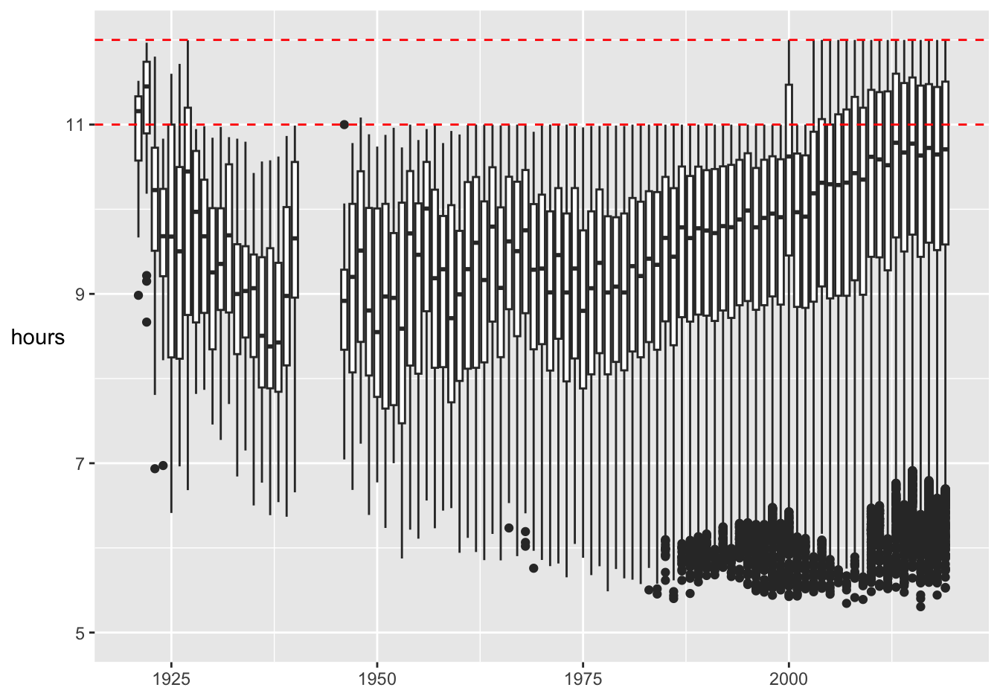
Figure 21.4: Distributions of finishing times in hours by year
The wartime gap when no races were run is obvious here as it was in Figure 21.1. The finishing limits of 11 and 12 hours have been marked with red dotted lines. The best times have improved since the early days, but very few runners took part then and support and conditions are undoubtedly far better nowadays. Winning margins were sometimes quite large early on, again because few runners took part. The median finishing time has increased since 1975 as more runners participated. The increased number of participants has also led to more runners being declared ‘fast’ outliers as the boxplot rule for defining outliers has become less stringent.
The distribution of finishing times in 2000 is quite different from the distributions of neighbouring years, having a higher median and higher box. This was due to the extended time limit and the much higher number of participants.
The median and best times in hours are plotted together with the numbers of runners in Figure 21.5.
Code
cmAllstats <- cmAll %>% group_by(Year) %>% summarise(N=n(), best=min(timeSecs, na.rm=TRUE), mid=median(timeSecs))
cmAllstats <- cmAllstats %>% complete(Year=full_seq(Year,1))
h1 <- ggplot(cmAllstats, aes(Year)) + geom_line(aes(y=best), colour="blue") + geom_line(aes(y=mid), colour="red") + xlab(NULL) + ylab("hours") + xlim(1945, 2020) + scale_y_continuous(breaks=seq(5*3600, 11*3600, 7200), labels=c("5", "7", "9", "11"), limits=c(5*3600, 12*3600)) + theme(axis.title.y=element_text(angle=0))
h2 <- ggplot(cmAllstats, aes(Year, weight=N)) + geom_bar(fill="grey70") + xlim(1945, 2020) + ylab(NULL) + xlab(NULL)
h1/h2 + plot_layout(heights = c(5, 3))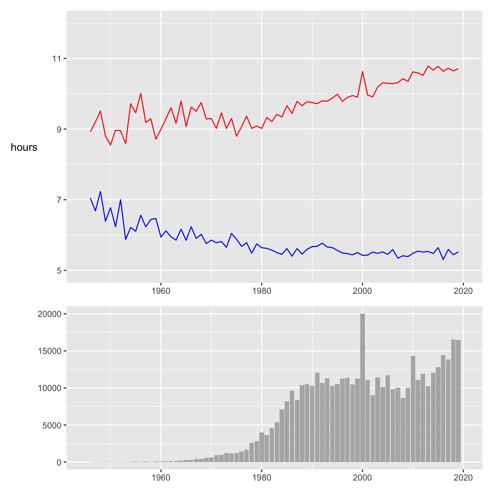
Figure 21.5: Median times (red), best times (blue) and numbers of finishers (barchart) from 1946 to 2019
This confirms what we know already, but emphasises the huge differences in numbers finishing. The best time has remained relatively constant for a while and the median time has increased.
21.4 Comparing times for men and women
21.4.1 Best times for men and women
Women have officially been allowed to run since 1975. At first few took part. Since 1980 over 30 women have finished each year, rising to over 3000 in 2019.
Code
cmAllsx <- cmAll %>% filter(!is.na(Sex), Year > 1979) %>% group_by(Year, Sex) %>% summarise(N=n(), best=min(timeSecs, na.rm=TRUE), mid=median(timeSecs))
pcmA <- ggplot(cmAllsx, aes(Year, best)) + geom_line(aes(colour=Sex)) + xlab(NULL) + ylab("hours") + theme(legend.position="none") + scale_y_continuous(limits=c(5*3600, 8*3600), breaks=seq(5*3600, 8*3600, 3600), labels=c("5", "6", "7", "8")) + scale_colour_manual(values=c("purple2", "springgreen3")) + theme(axis.title.y=element_text(angle=0))
cmAllsxW <- cmAllsx %>% select(-best, -mid) %>% pivot_wider(names_from=Sex, values_from=N)
cmAllsxW <- cmAllsxW %>% mutate(pFemale=F/(F+M))
pcmFperc <- ggplot(cmAllsxW, aes(Year, 100*pFemale)) + geom_line(col="purple2") + xlab(NULL) + ylab("% Female") + ylim(0,25) + theme(axis.title.y=element_text(angle=0))
pcmFperc_dim <- get_dim(pcmFperc)
set_dim(pcmA, pcmFperc_dim)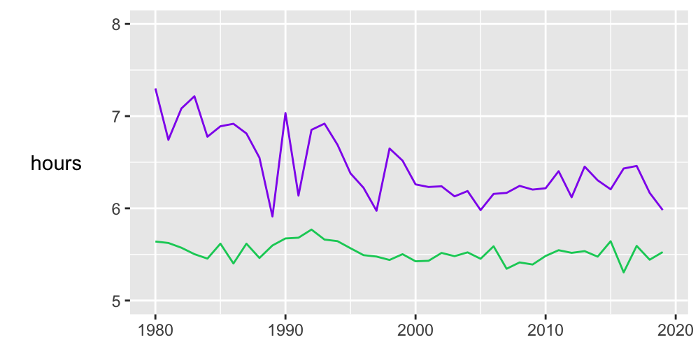
Figure 21.6: Best times for women (purple) and men (green) since 1980
Between 2000 and 2019 the mean best time for men has been about 5.5 hours and for women about 6.25 hours. Over this period some four to five times as many men have finished each year as women. The record for women is still the 1989 time of 5:54:43 by Frith van der Merwe. Not many records last that long.
The proportion of women taking part rose fairly steadily from 1980 to 2010 and has remained at about 20% since (Figure 21.7).
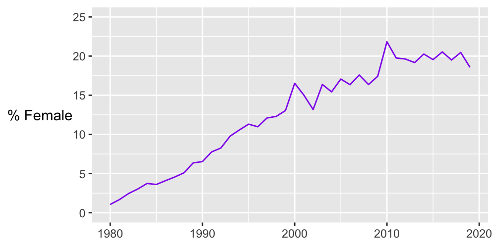
Figure 21.7: Percentage of women participants since 1980
21.4.2 Median times for men and women
Best times can vary quite a lot between years, whereas median times are likely to be more stable. Figure 21.8 shows the patterns of medians for men and women since 1980.
Code
cmAlld <- cmAll %>% filter(!is.na(Sex), Year > 1945) %>% group_by(Direction, Year, Sex) %>% summarise(N=n(), best=min(timeSecs, na.rm=TRUE), mid=median(timeSecs))
cmAlld <- cmAlld %>% mutate(sex=factor(Sex, levels=c("M", "F"), labels=c("Men", "Women")))
gm1 <- ggplot(cmAlld %>% ungroup() %>% filter(Year > 1979), aes(Year, mid, group=Direction)) + geom_line(aes(colour=Direction)) + ylab("hours") + xlab(NULL) + scale_colour_colorblind() + theme(legend.position="none") + facet_wrap(vars(sex)) + geom_point(aes(colour=Direction)) + scale_y_continuous(breaks=seq(8*3600, 11*3600, 3600), labels=c("8", "9", "10", "11"), limits=c(8*3600, 12*3600)) + theme(axis.title.y=element_text(angle=0))
gm2 <- ggplot(cmAlld %>% ungroup() %>% filter(Year > 1979), aes(Year, weight=N, group=Direction)) + geom_bar(aes(fill=Sex)) + ylab(NULL) + xlab(NULL) + scale_colour_colorblind() + theme(legend.position="none") + facet_wrap(vars(sex)) + scale_fill_manual(values=c("purple2", "springgreen3"))
CM12 <- gm1/gm2
CM12 + plot_layout(heights=c(3,1))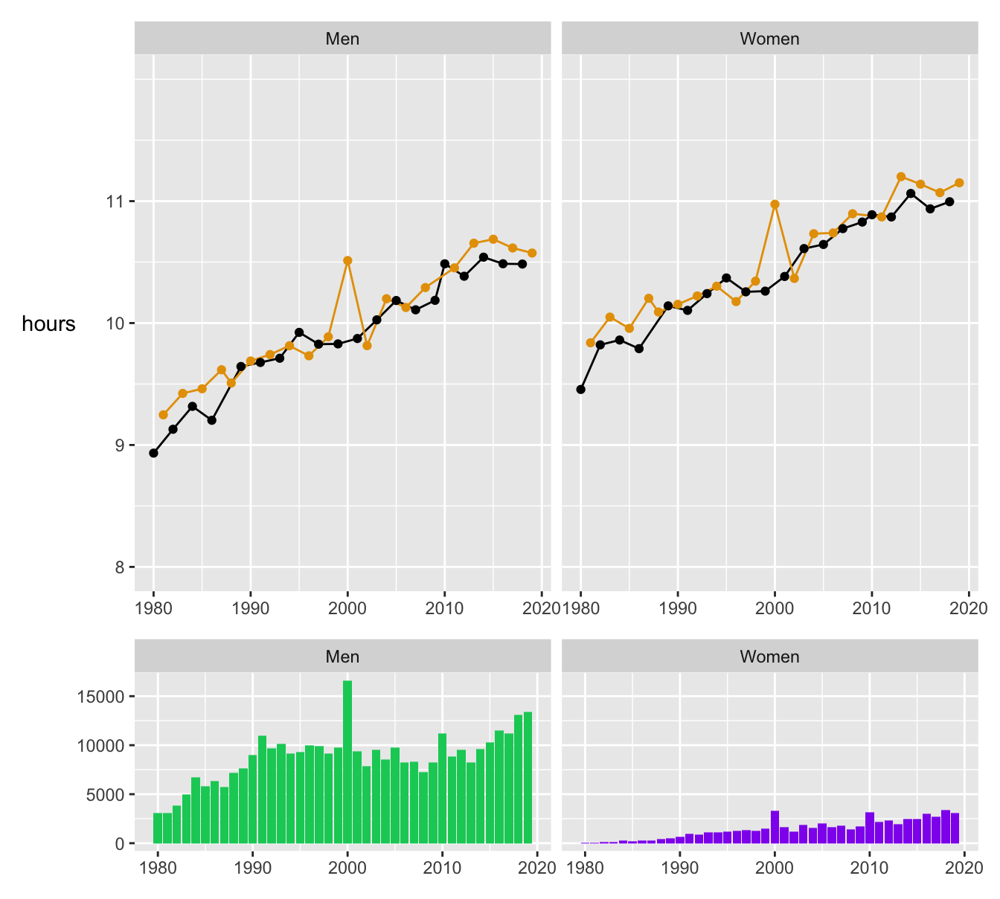
Figure 21.8: Median times for men and women for “up” (dark orange) and “down” (black) races since 1980 and the numbers finishing
The medians have been increasing steadily, apart from the year 2000 which has already been discussed. The graph for the “up” runs tends to be slightly higher than the graph for the “down” runs. The average difference between the male and female medians has been just over half an hour. Again, it is important to remember the much greater numbers of males running.
21.5 How many runners get medals?
Figure 21.9 displays the distributions of finishing times in the 2019 Comrades Marathon for females and males separately. It looks rather as if a set of skew distributions has been stuck together, each one ending at a particular time limit.
Code
cmAll2019 <- cmAll %>% filter(Year==2019)
cmAll2019t <- cmAll2019 %>% filter(!is.na(Sex)) %>% group_by(Sex) %>% slice_min(prop=0.05, order_by=timeSecs)
vx <- ggplot() + ylab(NULL) + xlab("hours") + scale_x_continuous(breaks=seq(5*3600, 11*3600, 7200), labels=c("5", "7", "9", "11"), limits=c(5*3600, 12*3600)) + theme(legend.position="none") + geom_vline(xintercept=c(7.5*3600, 9*3600, 10*3600, 11*3600, 12*3600), linetype="dotted")
cmvf <- vx + geom_histogram(data=cmAll2019 %>% filter(Sex=="F"), aes(timeSecs), fill="purple2", breaks=seq(5*3600, 12*3600, 300))
cmvm <- vx + geom_histogram(data=cmAll2019 %>% filter(Sex=="M"), aes(timeSecs), fill="springgreen3", breaks=seq(5*3600, 12*3600, 300))
cmvf/cmvm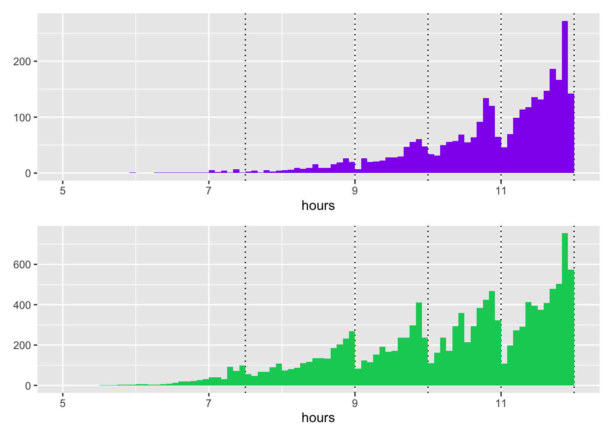
Figure 21.9: Finishing times in the 2019 race for females (above) and males (below), dotted lines mark limits for awarding medals other than gold
The vertical scales of the plots differ, as fewer women took part. The same intermediate boundary effects can be seen in both histograms. Some runners clearly wish to finish within certain target times. Dotted lines have been drawn to mark times governing the awarding of medals other than gold. The top 10 of each sex get gold medals. Men finishing under 6 hours but not in the top 10 get a Wally Hayward medal and women finishing under 7.5 hours but not in the top 10 get an Isavel Roche-Kelly medal. Every finisher gets a medal, and details of all the medals can be found in Wikipedia (2022).
21.6 How different are the “up” and “down” races?
As the races take place in different years over different distances in different directions, comparisons are inexact.
Code
cmAllS <- cmAll %>% group_by(Direction, Year) %>% summarise(N=n(), best=min(timeSecs, na.rm=TRUE), mid=median(timeSecs)) %>% ungroup() %>% complete(Year=full_seq(Year,1))
cmAllS[21:25, "Direction"] <- c("Down", "Up", "Down", "Up", "Down")
ggplot() + geom_line(data=cmAllS %>% filter(Direction=="Up"), aes(Year, best), colour="#E69F00",) + geom_line(data=cmAllS %>% filter(Direction=="Down"), aes(Year, best), colour="black") + xlab(NULL) + ylab("hours") + scale_y_continuous(breaks=seq(5*3600, 10*3600, 7200), labels=c("5", "7", "9"), limits=c(5*3600, 10*3600)) + theme(axis.title.y=element_text(angle=0))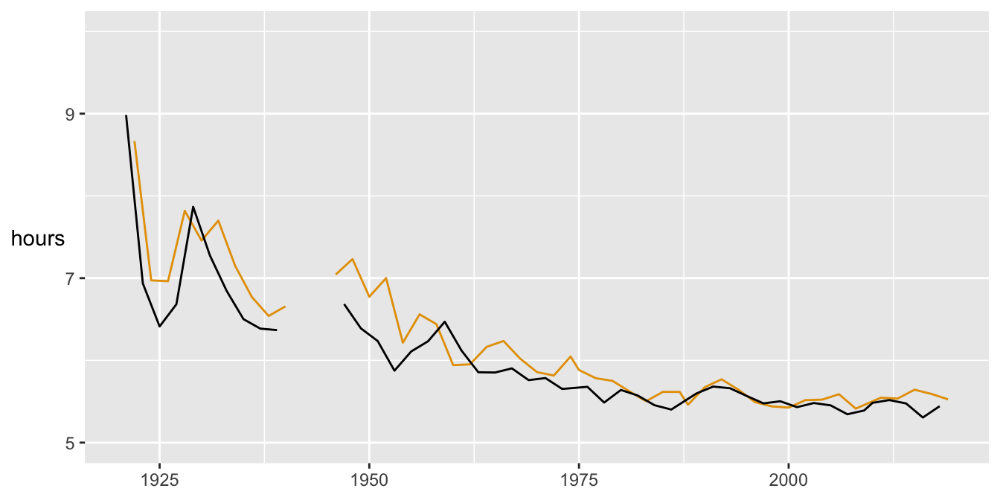
Figure 21.10: Comparisons of best times in hours for the “up” (dark orange) and “down” (black) races since 1921
In general the best times for the “up” races are slightly higher than the best times for the closest “down” races. Race distances for each year are given on the Marathon’s webpage, so that the average pace of the races can be compared too (Figure 21.11). Speeds are faster for the “down” races than the “up” races. The “down” races are slightly longer as Figure 21.12 shows.
Code
data(cmDist)
cmAD <- left_join(cmDist, cmAllS %>% filter(Year>1969))
cmAD <- cmAD %>% mutate(paceBest=3600*Distance/best, paceMed=3600*Distance/mid)
comUDpX <- ggplot() + geom_line(data=cmAD %>% filter(Direction=="Up"), aes(Year, paceBest), colour="#E69F00") + geom_line(data=cmAD %>% filter(Direction=="Down"), aes(Year, paceBest), colour="black") + xlab(NULL) + ylab("km/hr") + ylim(7.5,17.5) + geom_line(data=cmAD %>% filter(Direction=="Up"), aes(Year, paceMed), colour="#E69F00",) + geom_line(data=cmAD %>% filter(Direction=="Down"), aes(Year, paceMed), colour="black") + theme(axis.title.y=element_text(angle=0, vjust=0.4))
comUDpX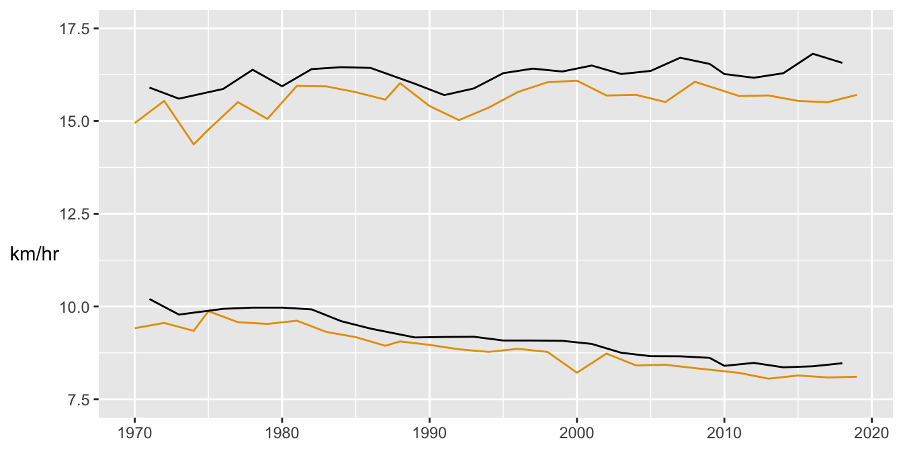
Figure 21.11: Average speed of the fastest runners (above) and of the median runners (below) in km/hr for the “up” (dark orange) and “down” (black) races since 1970
Code
profUD <- ggplot() + geom_line(data=cmAD %>% filter(Direction=="Up"), aes(Year, Distance), colour="#E69F00") + geom_line(data=cmAD %>% filter(Direction=="Down"), aes(Year, Distance), colour="black") + xlab(NULL) + ylab("km") + ylim(0, 100) + geom_point(data=cmAD %>% filter(Direction=="Up"), aes(Year, Distance), colour="#E69F00") + geom_point(data=cmAD %>% filter(Direction=="Down"), aes(Year, Distance), colour="black") + theme(axis.title.y=element_text(angle=0))
data(cmE)
cmE <- cmE %>% mutate(name=Name)
cmE[c(20, 26, 32 , 38, 40, 83, 93), "name"] <- NA
cmE[106, "name"] <- "Durban City Hall"
ComProfx <- ggplot(cmE, aes(Distance, Elevation)) + geom_area(fill="green") + xlim(0,100) + ylim(0,1000) + ylab("Elevation in metres") + xlab("Distance in km") + theme_classic()
profUD + ComProfx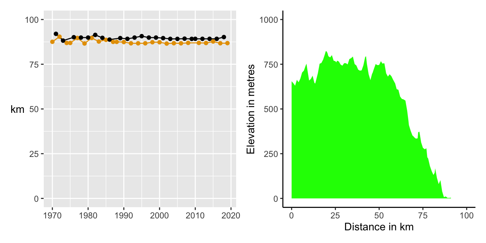
Figure 21.12: Distances in km for the “up” (dark orange) and “down” (black) races since 1970 and a profile plot for the down race from Pietermaritzburg to Durban that was planned for 2020
The “down” race is not all downhill and the “up” race is not all uphill, but overall there is a difference of around 700 m in elevation between Pietermaritzburg and Durban as the profile plot for the planned, but cancelled, 2020 Comrades Marathon shows (28East (2022)).
21.7 How do individual runners perform over the years?
Two of the best female runners are particularly interesting, the identical twins Elena and Olesya Nurgalieva. Elena ran every year from 2003 to 2015, while Olesya missed the 2006 and 2012 races. Their performances are compared in Figure 21.13. The plot on the left has the same vertical scale as in Figures 21.4 and 21.14, while the plot on the right has been magnified to show more detail.
Code
cmAllnurg <- cmAll %>% filter(grepl('Nurgalieva', Name))
# Remove false duplicate in 2014
cmAllnurg <- cmAllnurg %>% filter(timeSecs < 30000)
cmAllnurg <- cmAllnurg %>% complete(Year=2003:2015, nesting(Name))
nb <- ggplot(cmAllnurg, aes(Year, timeSecs, group=Name, colour=Name)) + geom_line() + scale_x_continuous(breaks=seq(2003, 2015, 2)) + ylab("hours") + xlab(NULL) + theme(legend.position="none") + scale_colour_discrete(labels=c("Elena", "Olesya"))
n1 <- nb + scale_y_continuous(breaks=seq(5*3600, 11*3600, 7200), labels=c("5", "7", "9", "11"), limits=c(5*3600, 12*3600))
n2 <- nb + scale_y_continuous(breaks=seq(6*3600, 7*3600, 3600), labels=c("6", "7"), limits=c(6*3600, 7*3600))
nurg12 <- n1 + n2 + plot_layout(guides="collect") & theme(legend.position="bottom", legend.title=element_blank(), axis.title.y=element_text(angle=0))
nurg12
Figure 21.13: Performances of the Nurgalieva identical twins
The sisters ran very similar times over the years, with mostly less than two minutes between them. Elena’s best performance was in 2012 when Olesya did not run. Elena had the best overall time for females eight times and Olesya twice. There are a number of good photos of the sisters in action on the web (just search for “Nurgalieva”).
Some runners have participated very often and Figure 21.14 shows the times achieved by the 12 runners with more than 40 appearances. The points and lines are coloured according to the runner’s age category at the time. You might expect a hockey-stick shape: an initial slower run followed by swift improvement to a best time and then a gradual decline in performance with increasing age. To some extent this is true, but with a lot of individual variation.
Code
cmAllm <- cmAll %>% group_by(Bib, Name) %>% mutate(nn=n()) %>% filter(nn>40)
cmAllm <- rbind(cmAllm, cmAll %>% filter(Name=="Dave Rogers" & Bib==196))
cmAllm <- rbind(cmAllm, cmAll %>% filter(Name=="Mike Cowling"))
cmAllm <- cmAllm %>% group_by(Name) %>% mutate(Year1=min(Year))
cmAllm <- cmAllm %>% mutate(cat=fct_explicit_na(cat, na_level="none"))
cmAllm <- cmAllm %>% ungroup() %>% mutate(Name=factor(Name), Name=fct_reorder(Name, Year1))
cmAllm <- cmAllm %>% complete(Year=1957:2019, nesting(Name))
colblind2 <- c(colorblind_pal()(4), "brown")
ggplot(cmAllm, aes(Year, timeSecs)) + geom_line(aes(colour=cat)) + ylab("hours") + xlab(NULL) + facet_wrap(vars(Name), nrow=4) + theme(legend.position="none") + scale_y_continuous(breaks=seq(5*3600, 11*3600, 7200), labels=c("5", "7", "9", "11"), limits=c(5*3600, 12*3600)) + geom_point(aes(colour=cat), size=0.5) + scale_colour_manual(values=colblind2, na.translate=F) + theme(legend.position="bottom", legend.title=element_blank(), axis.title.y=element_text(angle=0))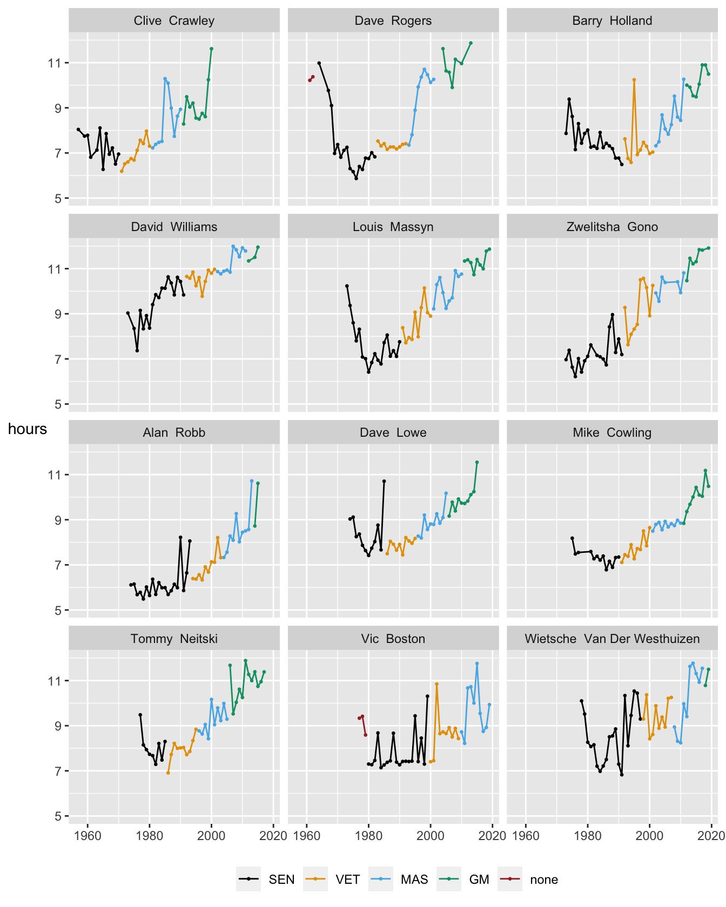
Figure 21.14: Runners who have finished more than 40 times, ordered by the first time they ran the race
Some runners have isolated poor performances compared with their other results (e.g., Barry Holland in 1995, Dave Lowe in 1985). Some show more variability in performance (e.g., Vic Boston and Wietsche Van Der Westhuizen). Most show a decline in performance as they get older.
Answers Numbers of participants have increased enormously since the early years. Since the race has been made open to all, many women now run. The proportion of older runners has increased. International participation has also grown. The fastest time to complete the race has dropped, but not noticeably so in the last 20 years. Median times have tended to increase as more runners participate. Men’s best times are quicker than women’s best times, but there are far more male runners. The difference is currently about 45 minutes. Overall the best times for the “up” race are generally slightly higher than the best times for the “down” race.
Further questions Birthyears of runners are available on the Marathon’s website, but were not scraped. How are age and performance related? Other marathons are newer and shorter. Do the results for them differ substantially from what has been found for the Comrades Marathon?
Graphical takeaways
- Boxplots by year provide a great deal of information. (Figure 21.4)
- Scales do not always have to start at 0. (e.g., Figures 21.6, 21.11, and 21.14)
- Combining a time series of statistics with a barchart of numbers over time works well when the time scales are aligned. (Figures 21.5 and 21.8)
- Scaling of related data may vary across plots to get the most information from them. (Figures 21.9 and 21.13)